06/12/2021 — Một người đàn ông 50 mấy tuổi bị đau ngực cấp, nay đã hết đau, có 2 lần troponin không phát hiện được. Chụp CT mạch vành?
Bản dịch tiếng Việt của bài "A man in his 50s with acute chest pain, now resolved, has 2 undetectable troponins. CT Coronary Angiogram?" – Dr. Smith’s ECG Blog. Giữ nguyên toàn bộ 13 hình ảnh của bản gốc.
Tác giả: Pendell Meyers
Một người đàn ông 50 mấy tuổi đến khoa cấp cứu (ED) vì đau ngực, mô tả là cảm giác đè ép, không lan, khởi phát đột ngột khoảng ba giờ trước khi đến viện. Cả tuần nay ông đã có những cơn đau tương tự nhưng nhẹ hơn, ngắt quãng (stuttering), thường hết sau vài phút. Ông cũng vã mồ hôi và khó thở. Ông có tiền sử gia đình mắc bệnh động mạch vành (CAD) rất nặng nề, với nhiều người thân phải phẫu thuật bắc cầu chủ vành (CABG) ở độ tuổi giữa 50, nhưng bản thân ông chưa có tiền sử CAD được biết đến.
Không rõ lúc phân loại (triage) ông còn đau hay không, nhưng ghi chép mô tả rằng cơn đau đã giảm vào lúc bác sĩ cấp cứu thăm khám:
Lúc phân loại, khoảng 2130:

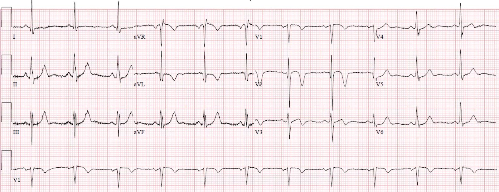
Điện tâm đồ nền có trong hồ sơ từ 5 năm trước:

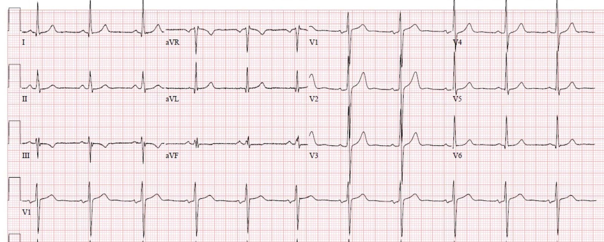
Điện tâm đồ nền về cơ bản bình thường, với điện thế hơi cao có thể gợi ý phì đại thất trái (LVH) (nhưng không có bất thường tái cực rõ của LVH), và trục lệch trái ở mức ranh giới (cũng có thể do LVH). Các sóng T và đoạn ST này là bình thường đối với phức bộ QRS này.
Điện tâm đồ lúc phân loại ở trên cho thấy hình ảnh tái tưới máu của OMI theo kiểu giữa-trước-bên, nay được gọi là dấu hiệu “Cờ Nam Phi” (South African Flag) (vùng V2-3, rồi “bỏ qua” các chuyển đạo trước tim bên và xuất hiện trở lại ở I và aVL)
— Sóng T đảo ngược ở aVL, kèm sóng T dẹt ở chuyển đạo I
–Sóng T thành dưới dương theo kiểu soi gương và tối cấp (Những sóng này trông như sóng T tối cấp thành dưới, nhưng thực ra là soi gương của sóng T đảo ngược ở aVL!!)
—ST chênh lên (STE) dốc lên còn sót lại ở V2 và V3, kèm phần cuối sóng T đảo ngược. Quan trọng: hình ảnh “Wellens” có nghĩa là tái tưới máu sau OMI!
–Cũng có sóng Q mới ở V2, phải được xem là bệnh lý cho đến khi chứng minh được điều ngược lại.
Có vẻ như cơn đau đã hết vào lúc ghi điện tâm đồ đầu tiên.
Troponin đầu tiên (loại thông thường — KHÔNG phải độ nhạy cao — Troponin T, bình thường dưới 0.01 ng/mL) không phát hiện được, trả kết quả dưới 0.01 ng/mL. Theo kinh nghiệm 4 năm của tôi với xét nghiệm cụ thể này, nó thậm chí không chuyển dương tính (phát hiện được, từ 0.01 ng/mL trở lên, cũng là giới hạn trên tham chiếu bách phân vị 99%) cho đến 4-6 giờ sau khi biến cố bắt đầu.
Một điện tâm đồ khác được ghi vào khoảng 2310, vẫn không có triệu chứng:

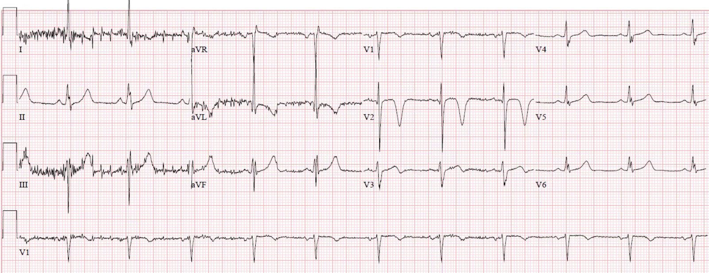
Các bác sĩ đã chỉ định chụp CT mạch máu cấp cứu, khảo sát cả động mạch chủ (tìm bóc tách) và chụp CT mạch vành (để đánh giá hẹp hoặc tắc mạch vành):
(Lưu ý: tôi không được đào tạo hay có chuyên môn đọc chụp CT mạch vành (CTCA), nhưng tôi sẽ đưa ra phỏng đoán tốt nhất của mình về các động mạch thấy được trong các hình dưới đây)

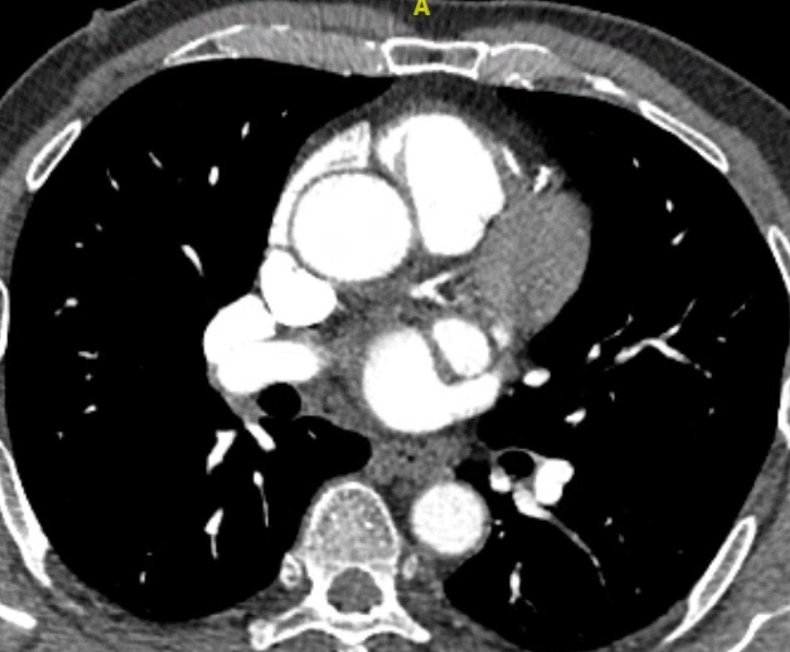

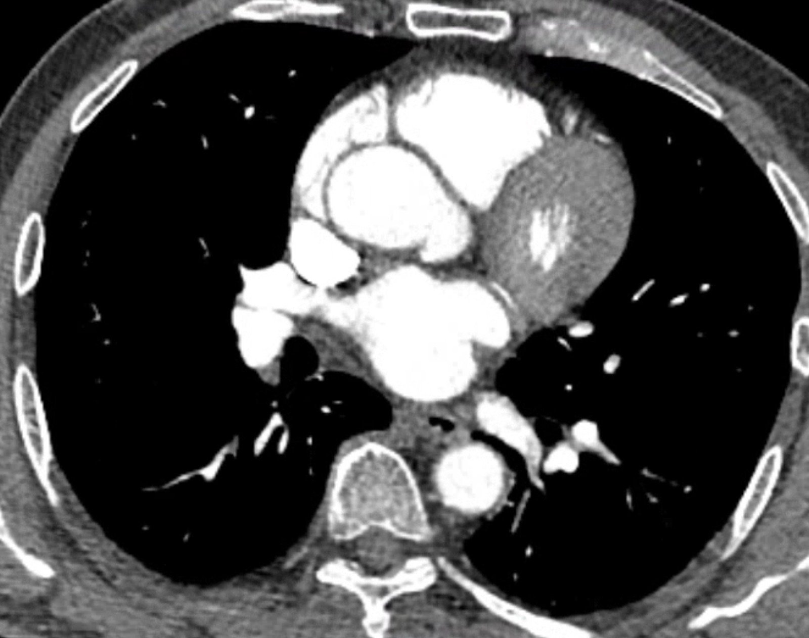

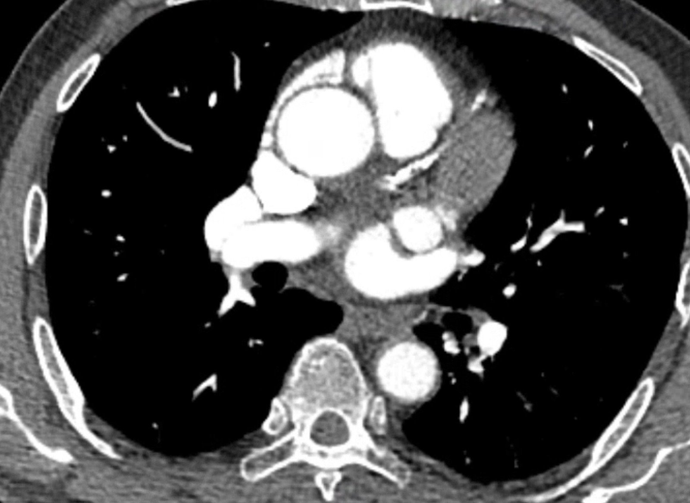

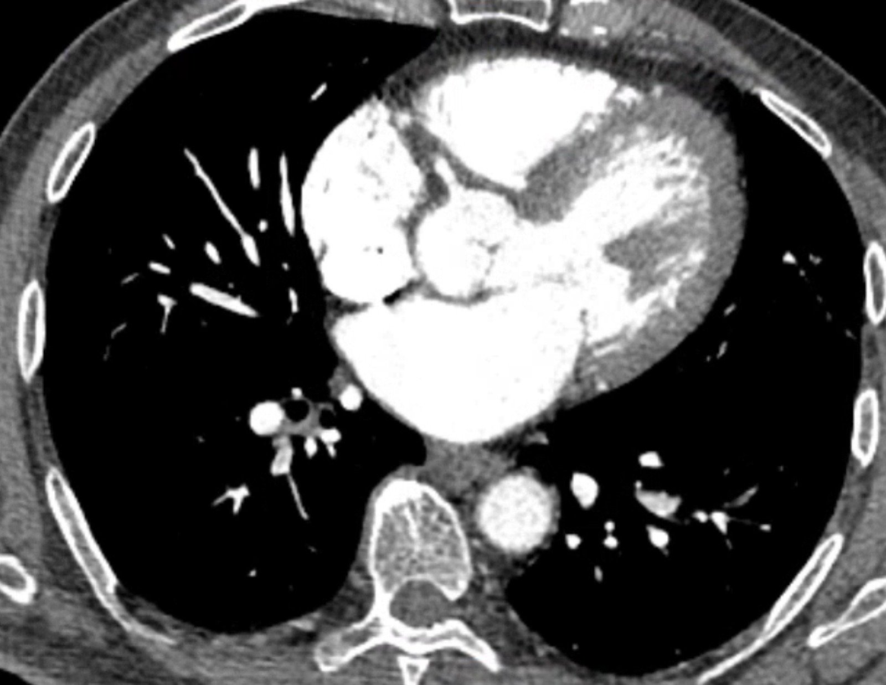
Kết quả đọc CT mạch máu cấp cứu như sau:
Không có bằng chứng bóc tách động mạch chủ hay thuyên tắc huyết khối động mạch phổi.
Chất lượng từ trung bình đến kém do vôi hóa nhiều.
Hẹp mức độ vừa ở LAD đoạn giữa 50-69% kèm các mảng xơ vữa vôi hóa một phần mức độ nặng dọc suốt LAD. Xin lưu ý rằng mức độ hẹp có thể bị đánh giá thấp hoặc quá mức do nhiễu nở hình (blooming) và nhiễu cứng hóa chùm tia (beam hardening), làm hạn chế việc quan sát một số phần của LAD trong ca này.
Hẹp đa ổ từ rất nhẹ đến nhẹ do các mảng xơ vữa vôi hóa một phần và không vôi hóa ở LCX, thân chung động mạch vành trái và RCA.
Troponin thứ hai cũng không phát hiện được, dưới 0.01 ng/mL.
Một điện tâm đồ khác được ghi vào khoảng 0130:

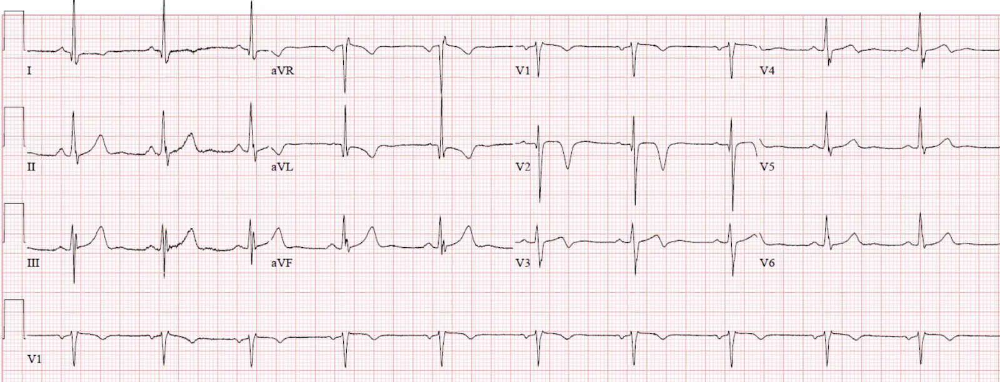
Sóng T thành dưới không còn tối cấp theo kiểu soi gương nữa
Troponin thứ ba (lấy khoảng 6 giờ sau khi đến viện) có kết quả vào khoảng thời gian này, tăng ở mức 0.03 ng/mL. Không chỉ định thêm troponin nào nữa.
Nhiều khả năng bệnh nhân không đau suốt cả đêm.
Chụp mạch vành được thực hiện vào khoảng 11 giờ sáng hôm sau, cho thấy:
Hẹp LAD đoạn gần đến đoạn giữa 90%, dòng chảy TIMI 3. Đây được xem là động mạch thủ phạm và đã được đặt stent với kết quả chụp mạch rất tốt.
Hẹp 60% đoạn giữa đến đoạn xa nhánh bờ tù thứ nhất (OM1), không được xem là thủ phạm, không can thiệp.
Bất thường nhẹ ở RCA và LCX.
LAD trước can thiệp:

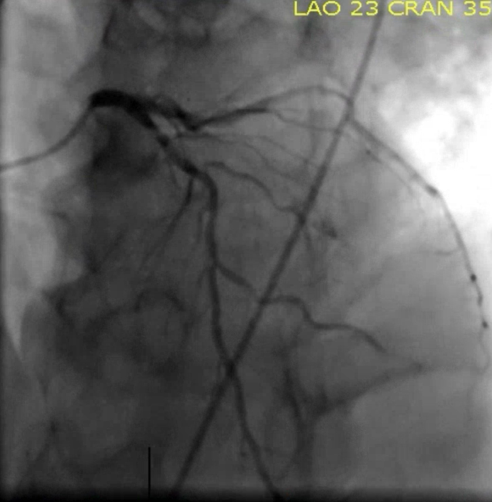
LAD sau can thiệp:

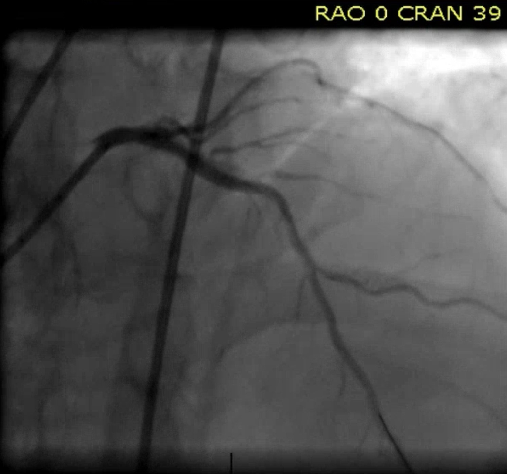
Góc chụp hình nhện (spider view) trước can thiệp:

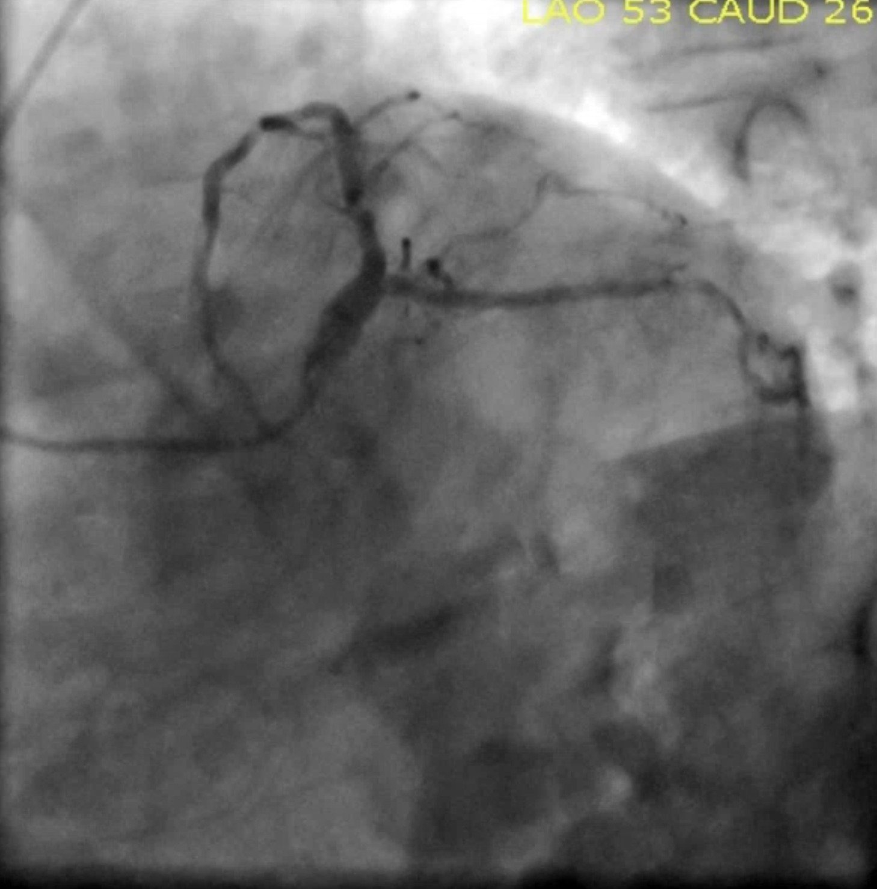
Góc chụp hình nhện (spider view) sau can thiệp:

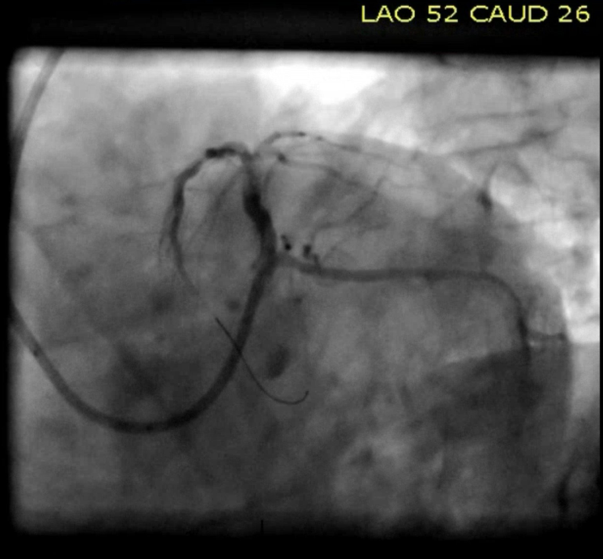
Điện tâm đồ sau can thiệp:

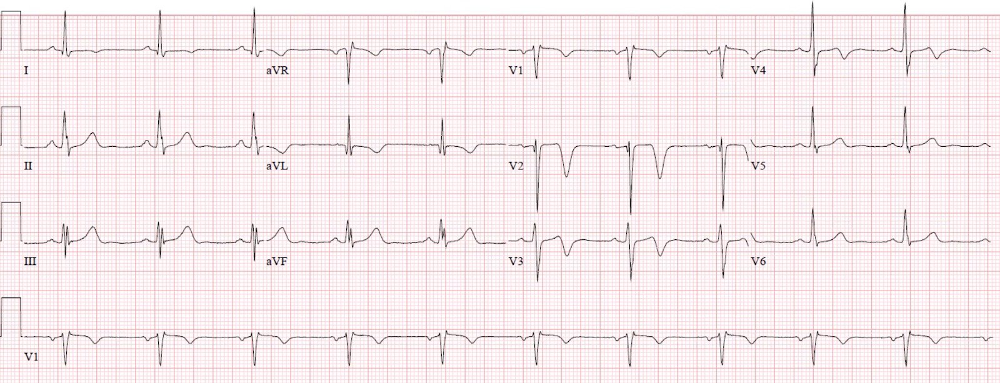
Có sự tiến triển của sóng T đảo ngược, sâu hơn một chút và lan ra tới V4.
Bệnh nhân diễn tiến tốt. Không đo thêm troponin nào nữa. Ông được xuất viện vào ngày hôm sau.
Những điểm cần học:
Đọc điện tâm đồ ở mức chuyên gia thường cho phép hiểu được chính xác tình trạng của tổn thương mạch vành lúc bệnh nhân đến viện. Trong ca này, điều đó sau đó đã được xác nhận bằng cả chụp CT mạch vành lẫn chụp mạch vành.
Nhồi máu cơ tim cấp không được loại trừ bằng troponin thông thường cho đến khi qua ÍT NHẤT 6 giờ. (Với troponin độ nhạy cao, một mức thay đổi (delta) rất nhỏ trong khoảng bình thường sau 1, 2 hoặc 3 giờ có thể loại trừ nhồi máu cơ tim với giá trị tiên đoán âm cao. Troponin thông thường, đặc biệt là Trop T, không đủ chính xác để dùng delta dưới bách phân vị thứ 99)
Trong ca cụ thể này, tôi không nghĩ chụp CT mạch vành đã bổ sung nhiều cho việc xử trí bệnh nhân, vì ông đã hết đau và điện tâm đồ cho thấy tái tưới máu. Có lẽ, sau hai lần troponin âm tính, nhóm điều trị đã bắt đầu nghi ngờ liệu có phải hội chứng vành cấp (ACS) hay không – có lẽ chụp CT mạch vành này đã giúp họ giữ vững chẩn đoán đúng là ACS.
Tuy nhiên, chúng tôi tin rằng có một số tình huống mà chụp CT mạch vành cấp cứu có thể cực kỳ hữu ích, chẳng hạn như:
Một bệnh nhân nghi ACS, còn triệu chứng hoặc có thiếu máu cục bộ trên điện tâm đồ nhưng không đạt tiêu chuẩn STEMI, mà vì lý do nào đó không được đưa đi chụp mạch vành cấp cứu do người ta không tin hoặc không hiểu rằng bệnh nhân bị OMI. Trong trường hợp này, nếu CTCA cho thấy một nhánh mạch vành bị tắc hoặc gần tắc, trong bối cảnh triệu chứng cấp tính, điều đó có thể giúp bác sĩ tim mạch hiểu được lợi ích của xử trí cấp cứu so với trì hoãn.
Xem ca này, nơi chính điều đó đã xảy ra:
This patient with “NSTEMI” was not allowed to go to the cath lab. Then the ED provider obtained an emergent coronary CT angio. What do you think it showed? (Bệnh nhân “NSTEMI” này không được cho vào phòng thông tim. Sau đó bác sĩ khoa cấp cứu đã cho chụp CT mạch vành cấp cứu. Bạn nghĩ kết quả cho thấy gì?)
Một bệnh nhân có triệu chứng có thể là ACS và các bất thường điện tâm đồ đáng lo ngại nhưng bị nghi là do nguyên nhân không phải ACS, như bệnh cơ tim Takotsubo, hình ảnh Brugada, v.v. Trong trường hợp như vậy, CTCA cấp cứu cho thấy các động mạch vành hoàn toàn thông suốt có thể giúp tránh kích hoạt phòng thông tim dương tính giả. Hiện chúng tôi chưa có ca nào được ghi nhận minh họa cách dùng này.
Nếu bạn đã dùng CTCA cấp cứu để giúp chẩn đoán hoặc loại trừ OMI, qua đó định hướng xử trí cấp cứu trường hợp có thể là ACS, xin hãy gửi ca của bạn cho chúng tôi!
Xem nghiên cứu này, trong đó CTCA khá chính xác trong việc dự đoán kết quả chụp mạch vành ở một quần thể bệnh nhân NSTEMI (đáng tiếc là họ không trình bày dữ liệu nào về OMI, hay về các tổn thương cấp tính sẽ có lợi khi được xử trí cấp cứu thay vì điều trị NSTEMI trì hoãn):